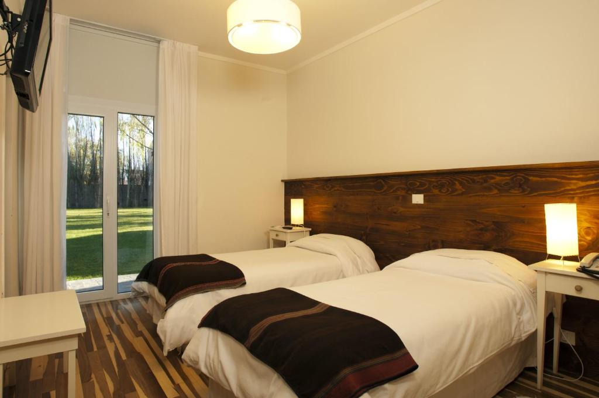
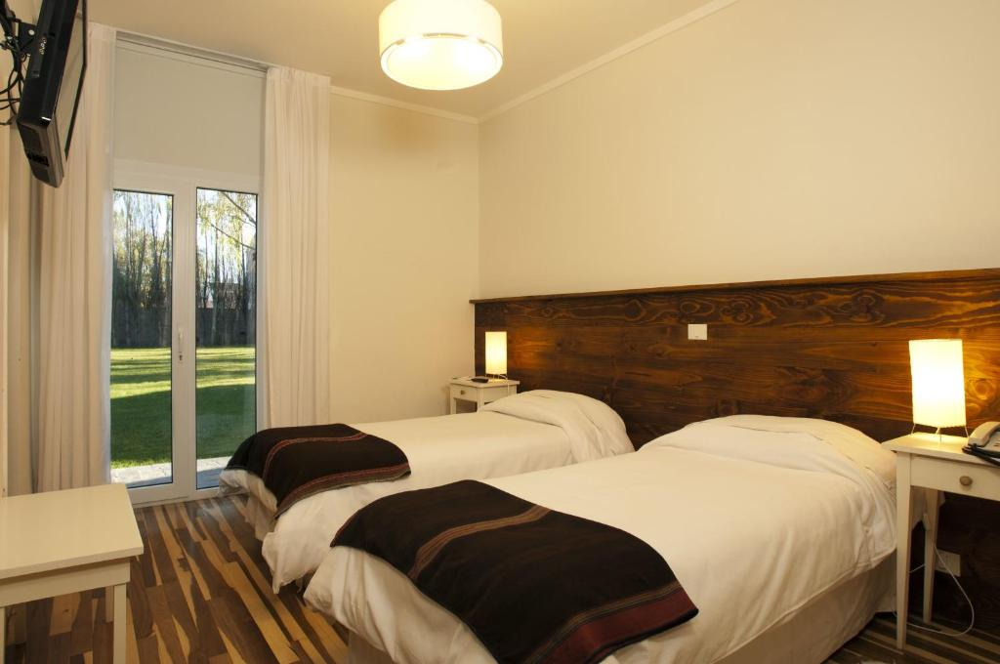

Hoteles
Estancia Nibepo Aike
La Estadía Nibepo Aike es un alojamiento rural ubicado en una granja de cría de ovejas, con impresionantes vistas a la montaña y a 69 km del glaciar de Perito Moreno. Las habitaciones se encuentran en una encantadora casa de madera con calefacción y muebles rústicos de madera. Ofrecen un desayuno buffet con productos naturales y un restaurante con una amplia variedad de platos. Los huéspedes pueden disfrutar de actividades como montar a caballo, senderismo y participar en la cría de ovejas. Además, hay un parque infantil. También se ofrece servicio de enlace con el aeropuerto, y la Estadía Nibepo Aike se encuentra a 56 km del aeropuerto de El Calafate y a 1 hora de Puerto Bandera en automóvil.


Contacto
- Tel: +54 (02902) 492-797
- Wpp: +54 296 659-4719
- Email: estancia@nibepoaike.com.ar
Hostería El Galpon del Glaciar
El Hosteria El Galpon Del Glaciar ofrece numerosas actividades y una propiedad de etilo rural. Todas las habitaciones cuentan con vistas a la Cordillera de los Andes o al Lago Argentino. El Hosteria está rodeado de naturaleza. Los huéspedes podrán contemplar el pastoreo y el esquileo de las ovejas, pescar con mosca y practicar ciclismo de montaña. También se ofrecen espectáculos de tango tradicional de artistas locales. El Hosteria El Galpon Del Glaciar está a sólo 500 metros del Lago Argentino y a 15 minutos en auto del centro de El Calafate. El Glaciar Perito Moreno está cerca.


Contacto
- Tel: +54 1166481830
- Wpp: no tiene
- Email: reservas@elgalpondelglaciar.com.ar
Peninsula Petit Hotel
Península Petit Hotel es un acogedor hotel junto al lago en Bariloche, ideal para unas vacaciones especiales. Ofrecen comodidades de hotel en un entorno natural. Los dueños, Pablo y Samanta, se mudaron de Buenos Aires y se dedican a hacer que los huéspedes se sientan como en casa. Su ubicación junto al lago Nahuel Huapi brinda un ambiente tranquilo y hermosos senderos. La experiencia en Bariloche será inolvidable gracias a su atención y servicio excepcionales.
Contacto
- Tel: +54 9 294 4 27 5555
- Wpp: no tiene
- Email: hola@peninsulapetithotel.com
Hotel Huinid Pioneros
Villa Huinid Hotel Pioneros en San Carlos de Bariloche es un hotel de moda con comodidades como habitaciones con TV de pantalla plana y aire acondicionado. Ofrecen wifi gratuito, recepción 24 horas, piscina y desayuno. Además, está cerca de lugares de interés como Galería del Sol y Cerro Otto. También hay restaurantes cercanos, como Butterfly y Holly Restobar, conocidos por sus platos de gambas. El hotel es una excelente opción para una estancia cómoda en Bariloche.
Contacto
- Tel: (+54 11) 5258 8280
- Wpp: 5492944533411
- Email: reservas@huinid.com
Hotel Tirol Bariloche
El Hotel Tirol Bariloche es un hotel 3 estrellas con una ubicación privilegiada en el centro de Bariloche, a solo 100 metros de la calle Mitre, conocida por sus tiendas y restaurantes. Todas las habitaciones han sido renovadas en los últimos 4 años para garantizar comodidad y calidad. Ofrecen desayuno buffet gratuito y estacionamiento sujeto a disponibilidad sin costo adicional. También proporcionan Wi-Fi gratuito en todo el hotel. Con 40 años de experiencia, el hotel acoge a turistas de diversas nacionalidades y ofrece atención en español, inglés y alemán. Destaca por sus espectaculares vistas al Lago Nahuel Huapi.
Contacto
- Tel: +54-294-4426152
- Wpp: no tiene
- Email: info@hoteltirol.com.ar
Hotel Campanilla
El Hotel Campanilla, ubicado en Ushuaia, ofrece alojamiento con bar, estacionamiento gratuito y jardín. Se encuentra cerca de atracciones como la bahía Encerrada (a 3 km), el tren del fin del mundo (a 5 km), el parque nacional Tierra del Fuego (a 7 km) y la estación de esquí de Castor Hill (a 25 km). Todas las habitaciones tienen vistas al jardín desde su patio y cuentan con escritorio, TV de pantalla plana y baño privado con caja fuerte. El hotel ofrece un desayuno continental y brinda un servicio de enlace con el aeropuerto internacional de Ushuaia-Malvinas Argentinas, que se encuentra a 3 km, por un costo adicional.
Contacto
- Tel: 2901 604070 / 2901 611767
- Wpp: no tiene
- Email: no tiene
Hosteria Kaiken
La Hostería Kaiken ocupa una casa histórica encantadora construida en 1964 y situada en Tierra del Fuego, a 150 metros del lago Fagnano. Alberga un restaurante y ofrece vistas panorámicas al lago y a la puesta de sol. Las habitaciones del Kaiken son muy luminosas y tienen ventanas grandes con vistas al lago y baño privado. Todos los días se sirve un desayuno casero que incluye macedonia y cruasanes. En las zonas comunes hay conexión de wifi gratis. En el restaurante se ofrecen especialidades de cordero. La Hostería Kaiken cuenta con estacionamiento gratuito y está situado a 5 km de Tolhuin y a 95 km de Ushuaia.
Contacto
- Tel: +54 2964 61-5102
- Wpp: no tiene
- Email: reservas@hosteriakaiken.com
Hotel Tolosa
El Hotel Tolosa, situado a 250 metros de la playa de Puerto Madryn y al lado del centro de la localidad, ofrece conexión de wifi gratis y desayuno buffet. Su centro de negocios dispone de ordenadores para uso de los huéspedes. Las habitaciones del Hotel Tolosa tienen baño privado, aire acondicionado y TV por cable. Hay room service. Este hotel cuenta con bar y sala de TV. Ofrece bicicletas para usar de forma gratuita y servicio de lavandería a pedido. El Hotel Tolosa se encuentra a 100 metros del parque San Martín y de la zona de supermercados, restaurantes y bares. El aeropuerto internacional de Puerto Madryn está a 5 km.
Contacto
- Tel: +54 0280 4471850 / +54 0280 4456122
- Wpp: no tiene
- Email: tolosa@hoteltolosa.com.ar
La Posada de Madryn
Esta Posada, situada a solo 6 calles del paseo marítimo del océano Atlántico, cuenta con un jardín privado con pileta climatizada al aire libre y solárium. El hotel está junto a un parque forestal de 3.000 m2. Las habitaciones de La Posada De Madryn tienen calefacción y vistas al entorno natural. Están equipadas con conexión de wifi gratis, TV por cable y baño privado con secador de pelo. Todas las mañanas se sirve un desayuno buffet en la sala de desayunos de La Posada, con vistas al parque. Por la noche, el restaurante del hotel sirve platos caseros elaborados, tradicionalmente patagónicos. Los huéspedes pueden relajarse en las sillas de la pileta o tomar el sol en el jardín. El hotel está a 20 calles del centro de Puerto Madryn y a 20 minutos en auto del aeropuerto.
 

Contacto
- Tel: 280 4 88 3467
- Wpp: +549 280 4 69 1962
- Email: hotel@la-posada.com.ar